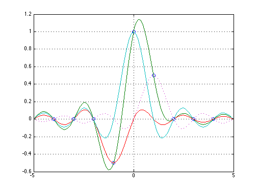

DAC
Copyright 2007 Telecommunications Lab
t = (-4:4)'; % a column vector of time samples randn('seed',0); %x = randn(size(t)); % a column vector of data x=[0; 0;0;-.5;1;.5;0;0;0]; % ts is times at which to interpolate data ts = linspace(-5,5,100)'; y1= sinc(ts(:,ones(size(t))) - t(:,ones(size(ts)))')*[0; 0;0;-.5;0 ;0 ;0 ;0 ;0]; y2= sinc(ts(:,ones(size(t))) - t(:,ones(size(ts)))')*[0; 0;0; 0 ;1 ;0 ;0 ;0 ;0]; y3= sinc(ts(:,ones(size(t))) - t(:,ones(size(ts)))')*[0; 0;0; 0 ;0 ;.5;0 ;0 ;0]; y = sinc(ts(:,ones(size(t))) - t(:,ones(size(ts)))')*x; plot(t,x,'o',ts,y,ts,y1,'-',ts,y2,ts,y3,':','LineWidth',1.5); grid on;